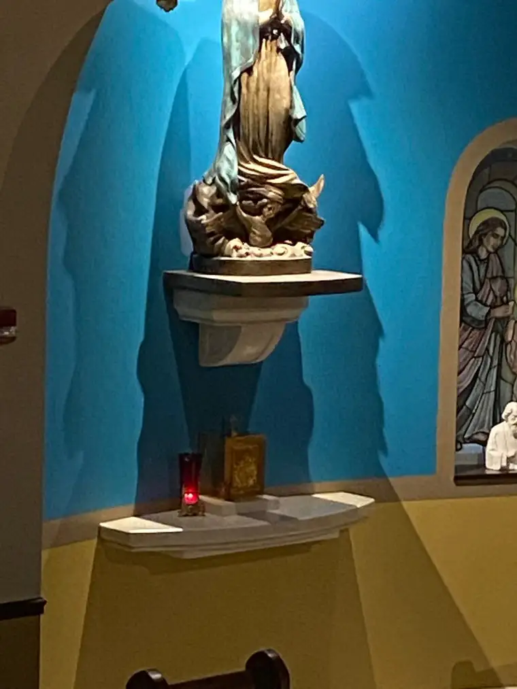

It was during Vacation Bible School when I learned about the Real Presence of Jesus in the Tabernacle, around 1975 or so, I’d say; I was around seven.
“Whenever you see that red light, that means Jesus is here,” said the religious sister in charge of my second-grade class.
Before then, I had not noticed the candle. Her pronouncement changed things. Now I could visualize God in a way I had not been able to before. Of course, I’d seen him in pictures, and on the large crucifix that hung near and above that little candle encased in a red, transparent house. But I knew those were only depictions. Somehow, I grasped that the candle meant something altogether different — that Jesus really was here, alive.
At the time, however, I didn’t understand that the Real Presence was kept in the tabernacle just inches from the candle, and that THAT is where Jesus was spending time. I thought that Jesus actually was living inside the candle. In a sense He is of course, for God is everywhere, but not in the special way we speak of when we say “Real Presence.”
From that moment on, however, whenever I see the red glow of the candle on the altar near the tabernacle, I am instantly calmed and more at peace. “Jesus is here.” I can still hear Sister Dolores telling me that, and remember taking her at her word.
Those memories flooded back recently when, after several weeks of doing my weekly, Wednesday-night holy hour at home due to pandemic restrictions, and learning our local cathedral’s Adoration chapel was still keeping regular hours, I decided to go in that late-night hour. Maybe it was less my doing, and more Jesus’, for the urge was particularly strong. The fact that it is Holy Week may have contributed. As much as I had appreciated, in the several weeks prior, watching a live-streamed Adoration chapel in Poland — which was, to me, better than nothing, and in moments, actually quite beautiful and moving — I needed to be there in person. But, the church website said, there would be no Exposition.
Honestly, I didn’t know what to expect. I had not taken a lot of time to really think about it at all. I just went. When I stepped into the foyer from the dark outside, I found myself alone, with most of the chapel dark, too. It was eerie, and seeing the altar in front of me, empty, brought a deep sadness. Hesitantly, I opened the door to the interior of the chapel, and climbed the stairs to the loft — a favorite spot whenever I come to this chapel now. I looked around, and finally spotted a panel for lighting, and pushed buttons until I found one that would illuminate parts of the chapel without it being too bright.

I was still mostly in the dark in the loft, so I moved my things over to a corner perch and settled in. Soon, I began writing in my prayer journal, beginning with somewhat of a lamentation over the fact that I was sitting alone, there in the partial dark. Oddly, even though I felt sadness, I still sensed the presence of Jesus. Maybe it was just the memory of Him being there in previous visits that had fooled me, I thought.

I had only written a couple sentences, however, when something caught my eye. It was a flicker — an image caught in the reflection of a cabinet in the back of the chapel: a red light, I could see visibly now. I followed it to the left, seeking the source — the real light, not just the reflected image. And there it was! An actual candle, tucked away in its little red “house,” beaming from within. And near it, the tabernacle.

How many times had I entered this chapel, and yet, I’d never noticed the tabernacle off to the side. I had only noticed the gleaming Eucharistic host set inside the beautiful monstrance, now shelved in waiting, but there on the gleaming, glowing altar. I felt a little silly that I had never paid attention to that back wall, and yet…why would I have, when Jesus was always front and center every other time I’d been in here?
But now, he was hidden against the wall; secluded, yes, but not entirely. The flicker I’d been tapped with had told me he was indeed with me. In my heart, but more than that. He was there, too, in the Eucharistic presence. Not exposed, but still palpably present in a mysteriously real way.
I stayed for two hours. And for the duration, I felt such a peace, even joy, despite things being so different than my last visit, and all those in the past. I found myself loving being there alone, because I was so very aware I wasn’t alone. Knowing this, as I thought of the prayers I’d come to offer, I said them aloud, uninhibited, knowing they were not falling on deaf ears; that the Lord of the universe was there, hearing every word, and helping me open my heart to the Holy Week ahead.
This time of darkness, of waiting, of wondering, of aching, is not easy. It is a time of great sorrow for Christians, the Easter people; a time when we are deeply grieving, not just this somber week as usual, but so many losses, which have become so much more obvious to many. But there is still a light — a little flicker, perhaps, but the glow draws us to a warmth that is beyond this world and real. We must not lose sight of it.
Thank you, Lord, for keeping company with me. I pray my presence delighted you even a portion of how much yours did me.
“So could you not keep watch with me for one hour?” ~ Jesus to Peter (Matt. 26:40)